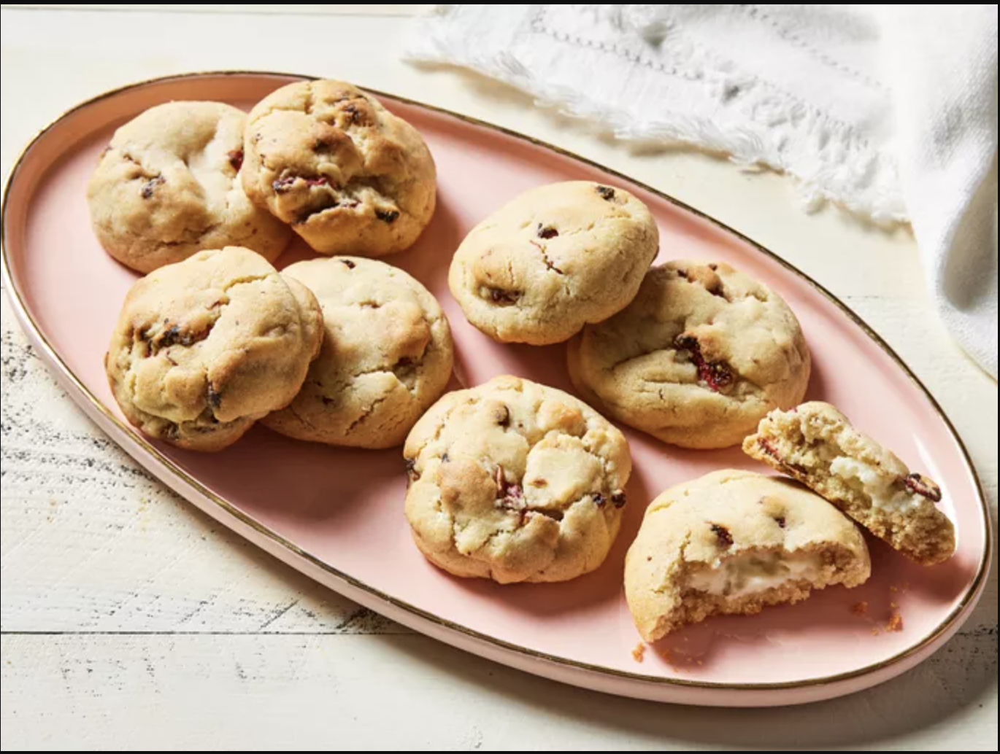

Home
Strawberry Cheesecake Cookies

Description
These strawberry cheesecake cookies are moist and buttery with a smooth, creamy cheesecake filling full of strawberry flavor.
Ingredients
- 3 ounces cream cheese, softened
- 1/4 cup powdered sugar
- 1 cup unsalted butter, melted and cooled slightly
- 3/4 cup granulated sugar
- 1/4 cup packed light brown sugar
- 1 large egg, at room temperature
- 1 1/2 teaspoons vanilla extract
- 2 3/4 cups all-purpose flour
- 1/2 teaspoon baking powder
- 1/2 teaspoon baking soda
- 1/4 teaspoon kosher salt
- 1 cup freeze-dried strawberries
Steps
- Gather all ingredients. Line a small rimmed baking sheet with parchment paper; set aside.
- Beat cream cheese and powdered sugar with an electric hand mixer on medium speed until smooth and creamy, about 1 minute. Scoop cream cheese mixture into 16 portions (about 1 teaspoon each), and place onto prepared baking sheet. Freeze, uncovered, for 15 minutes.
- 1 cup unsalted butter, melted and cooled slightly
- Preheat oven to 400 degrees F (200 degrees C) with racks in top third and lower third positions. Line 1 large rimmed baking sheet with parchment paper; set aside.
- Whisk together melted butter, granulated sugar, and brown sugar until mostly combined (mixture will look broken). Add egg and vanilla, and whisk until mixture looks homogenous.
- Add flour, baking powder, baking soda, and salt to butter mixture; whisk until almost fully incorporated and a few dry streaks remain, about 1 minute. Fold freeze-dried strawberries into flour mixture until fully combined and strawberries are broken up into smaller bits.
- Scoop dough into 16 portions (about 3 tablespoons each). Working with 1 dough portion at a time, use your hands to flatten dough into a 1/2-inch thick disk. Place a frozen cream cheese ball in center of dough disk, and carefully wrap dough around cream cheese ball to enclose. Transfer cookie to prepared baking sheet. Repeat procedure with remaining dough and cream cheese balls. Chill cookies, uncovered, 30 minutes.